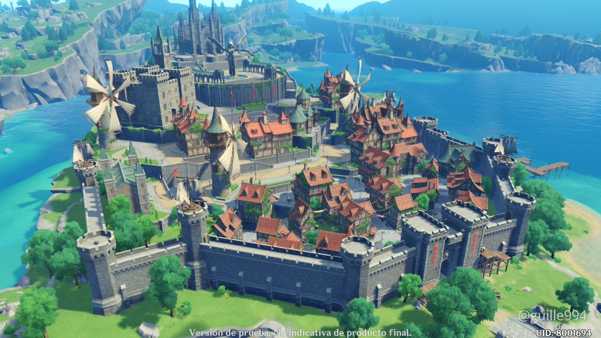
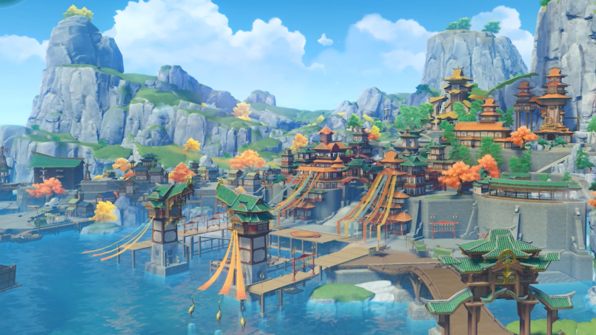

Mondstadt is de eerste regio waar de traveler komt zoeken naar zijn of haar verloren broer of zus.
Deze regio is in een soort duitse stijl gemaakt en is het thuisland van de anemo archon genaamd Venti.
Mondstadt bestaat uit een grote stad genaamd Mondstadt, een krater waar de draak van venti woont, een grote ijsberg en heel veel hoge pieken bij de zee.

Liyue is de tweede regio waar de traveler komt zoeken naar zijn of haar verloren broer of zus.
Zhongli is de geo archon dit maakt hem dan ook de baas van deze regio omdat dit de geo regio is.
De stijl van deze regio is japans.
Liyue bestaat uit de grote hoofdtad genaamd Liyue, een kleine stad wat lijkt op een boomhut en heel veel super steilen bergen.
De derde regio waar de traveler komt zoeken naar zijn of haar verloren broer of zus is in Inazuma.
Deze regio bevindt zich achter een grote ocean en bestaat uit meerdere eilanden in een chinese stijl.
Wat je kan vinden in de Inazuma regio is de hoofdstad met een hele hoge piek erbij waar een magische boom op staat, een eiland waar het altijd stormt, en een onderwater grot.